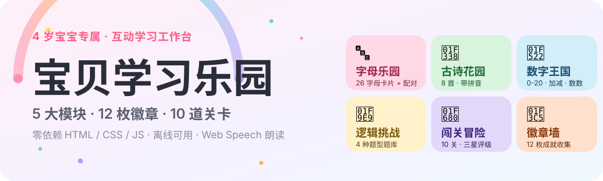
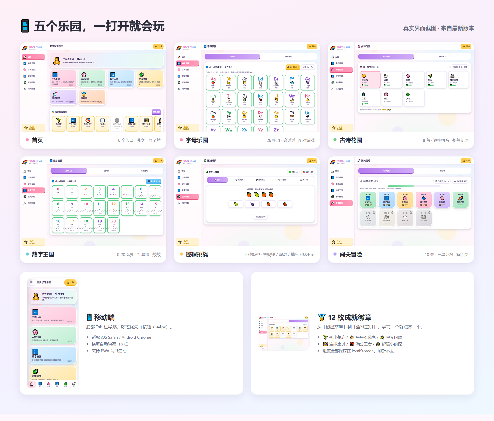

HTML/CSS/JS · 零依赖适龄 · 4 岁宝宝模块 · 5 大乐园关卡 · 10 关
宝贝学习乐园
给 4 岁宝宝准备的一间彩虹色互动学习工作台：点一点会说话，答对题目拿星星，学会内容就点亮徽章。整个项目是纯静态 HTML / CSS / JavaScript，打开浏览器即可玩，不需要安装依赖或后端服务。
先看它长什么样

里面有什么
| 乐园 | 可以做什么 |
|---|---|
| 字母乐园 | 认识 26 个大小写字母，查看单词与中文含义，听英文发音，玩大小写配对 |
| 古诗花园 | 学习 8 首经典古诗，逐字显示拼音，支持整首朗读与逐句朗读 |
| 数字王国 | 认识 0–20，练习 10 以内加减法，完成数数游戏 |
| 逻辑挑战 | 在找规律、图形配对、排排序、找不同 4 种题型中训练观察与推理 |
| 闯关冒险 | 10 个综合关卡，每关 5 题，答对 3 题过关，按表现获得 1–3 颗星 |
| 徽章墙 | 收集 12 枚成就徽章，从「初出茅庐」一路解锁到「全能宝贝」 |
为什么适合小朋友
- 点一点就有反馈：按钮、卡片和答题都有明确的视觉反馈，答对会掉星星特效。
- 听、看、玩结合：字母和古诗都支持 Web Speech API 朗读；每个知识点都用卡片或小题呈现。
- 进度看得见：星星、徽章、已认识字母、已学古诗、闯关进度都会保存在浏览器里。
- 手机也能玩：桌面端使用侧边栏，移动端切换为底部 Tab 导航；交互按钮按触控尺寸设计。
快速开始
方式一：直接打开
下载或克隆仓库后，双击 index.html 即可启动。项目没有构建步骤，也没有 npm install。
方式二：启动本地静态服务
git clone https://github.com/Yui6912/baby-learning-park.git
cd baby-learning-park
python3 -m http.server 8124然后打开 http://127.0.0.1:8124。
如果希望局域网内用手机访问，把 127.0.0.1 换成电脑的局域网 IP，并确认防火墙允许该端口。
技术细节
- 前端：原生 HTML / CSS / JavaScript，零第三方运行时依赖。
- 状态：
localStorage持久化，键名为baby_learn_park_v1。 - 朗读：Web Speech API；中文使用
zh-CN，字母使用en-US。 - 数据：26 个字母、8 首古诗、21 张数字卡片、4 种逻辑题型、10 个闯关关卡、12 枚徽章。
浏览器支持与限制
- 推荐使用最新版 Chrome、Edge 或 Safari。
- 朗读功能依赖浏览器的 Web Speech API；如果浏览器不支持，其他学习与闯关功能仍可使用。
- 学习进度只保存在当前浏览器的
localStorage中，清理站点数据会同时清空星星、徽章与关卡进度。 - 这是面向家庭使用的轻量学习玩具，不替代系统的幼儿教育课程。
About 区建议文案
简介：给 4 岁宝宝的零依赖互动学习乐园：字母、古诗、数字、逻辑、闯关与徽章收集，支持朗读和移动端。
Website：在线体验链接
Topics：children-learning · preschool · education · interactive-learning · html · css · javascript · zero-dependency · chinese-learning · web-app
About 区的修改命令已经写进 README，但尚未执行；本地预览和远程仓库保持分离。
一个给小朋友的彩虹色学习角落 🌈